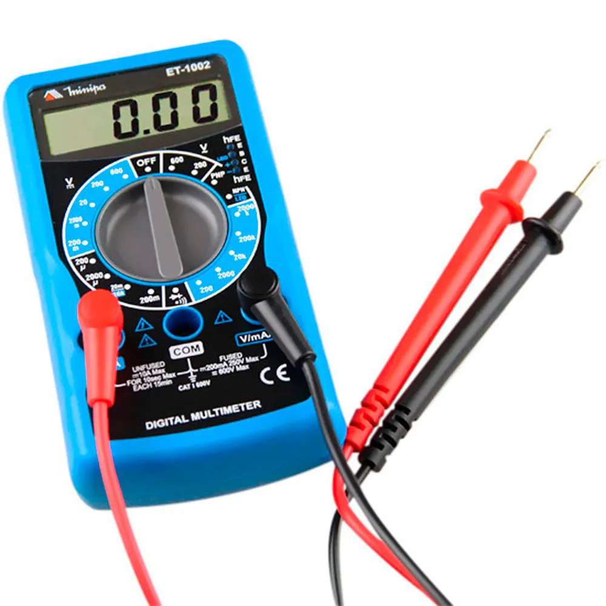

Medidas
O que é medida?
É o resultado de uma uma comparação entre uma medida desconhecida e um padrão, por exemplo o uso de metros para definir uma extensão
Múltiplos e submúltiplos
São prefixos, múltiplos que são multiplicados por 1000, por exemplo Giga - Tera - Penta. E os submúltiplos que são os valores divisíveis por 1000, como Mili.
O que é exatidão de medida?
É a proximidade do valor real com o valor medido, ele avalia a presença de erros sistemáticos, indicando se o resultado está correto
Multimetro
O que é?
Um multímetro é um aparelho usado para medir grandezas elétricas. Ele é muito comum em aulas de eletrônica e também utilizado por técnicos para testar circuitos e equipamentos.

Medida de continuidade
A medida de continuidade é um teste que o multímetro faz para verificar se a corrente elétrica consegue passar por um circuito ou fio.